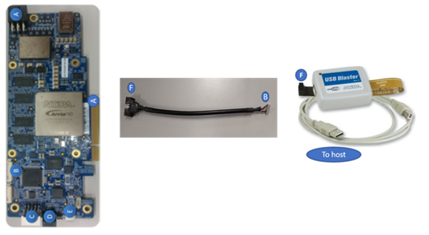

NOTES:
- For a first-time installation, use all steps.
- Use steps 1 and 2 only after receiving a new FPGA card.
- Repeat steps 2-5 when installing a new version of the Intel® Distribution of OpenVINO™ toolkit.
- Use steps 3-5 when a Neural Network topology used by an Intel® Distribution of OpenVINO™ toolkit application changes.
1. Configure and Install the Intel® Vision Accelerator Design with an Intel® Arria® 10 FPGA
- Download
fpga_support_files.tgz from the Intel Registration Center. The files in this .tgz archive are required to ensure your FPGA card and the Intel® Distribution of OpenVINO™ toolkit work correctly.
- Go to the directory where you downloaded the
fpga_support_files.tgz archive.
- Unpack the
.tgz file: tar -xvzf fpga_support_files.tgz
fpga_support_files is created.
- Go to the
fpga_support_files directory:
- Source
setup_env.sh to set your environment variables: source /home/<user>/Downloads/fpga_support_files/setup_env.sh
- Configure the FPGA Driver Blacklist:
sudo mv config/blacklist-altera-cvp.conf /etc/modprobe.d
- Switch to superuser:
- Use the
setup_env.sh script from fpga_support_files.tgz to set your environment variables: source /home/<user>/Downloads/fpga_support_files/setup_env.sh
- Change directory to
Downloads/fpga_support_files/: cd /home/<user>/Downloads/fpga_support_files/
- Run the FPGA dependencies script, which allows OpenCL to support Ubuntu* and recent kernels:
./install_openvino_fpga_dependencies.sh
- When asked, select the FPGA card, Intel® GPU, and Intel® Movidius™ Neural Compute Stick, then you can install the correct dependencies.
- If you installed the 4.14 kernel as part of the installation script, you will need to reboot the machine and select the new kernel in the Ubuntu (grub) boot menu. You will also need to rerun
setup_env.sh to set up your environmental variables again.
- Install OpenCL™ devices. Enter Y when prompted to install:
- Reboot the machine:
- Use the
setup_env.sh script from fpga_support_files.tgz to set your environment variables: source /home/<user>/Downloads/fpga_support_files/setup_env.sh
- Run
aocl diagnose: Your screen displays DIAGNOSTIC_PASSED.
2. Set Up the Intel® Vision Accelerator Design with Intel® Arria® 10 FPGA for 2018R5
For the 2018R5 release, the Intel® Distribution of OpenVINO™ toolkit introduced a new board support package (BSP) a10_1150_sg1 for the Intel® Vision Accelerator Design with an Intel® Arria® 10 FPGA, which is included into the fpga_support_files.tgz archive. To program the bitstreams for the Intel® Distribution of OpenVINO™ toolkit R5, you need to program the BSP into the board using the USB blaster.
NOTE: These steps apply only if you update to the Intel® Distribution of OpenVINO™ toolkit R5. Otherwise, you can skip them.
- Go to the
config folder of the fpga_support_files directory where the a10_1150_sg1 is located: cd /home/<user>/Downloads/fpga_support_files/config/
- Copy the
a10_1150_sg1 folder to the board directory: sudo cp -rf a10_1150_sg1 /opt/altera/aocl-pro-rte/aclrte-linux64/board/
- Convert the BSP files from DOS to UNIX:
sudo chmod +x a10_1150_sg1
find a10_1150_sg1 -type f -print0 | xargs -0 dos2unix
- Set up the USB Blaster:
- Connect the cable between the board and the host system. Use the letter codes in the diagram below for the connection points:
- Connect the B end of the cable to point B on the board.
- Connect the F end of the cable to point F on the FPGA download cable.
- From point F end of the cable to point F on the FPGA download cable, the connection is as shown:

- Source the
setup_env.sh script from the fpga_support_files to set up the environment variables: source /home/<user>/Downloads/fpga_support_files/setup_env.sh
- Update the Intel® FPGA Download Cable rules to program the board without root permissions and to flash the initialization bitstreams so that the Intel® FPGA Download Cable can communicate with the board:
sudo cp config/51-usbblaster.rules /etc/udev/rules.d
- Load the USB rules:
sudo udevadm control --reload-rules && udevadm trigger
- Unplug and re-plug the Intel® FPGA Download Cable to enable JTAG connection.
- Run
jtagconfig to ensure that your Intel FPGA Download Cable driver is ready to use: Your output is similar to: 1) USB-Blaster [1-6]
02E660DD 10AX115H1(.|E2|ES)/10AX115H2/..
- Download Intel® Quartus® Prime Software Lite Edition 17.1. Install the Intel® Quartus® Prime Software Lite to the
/home/<user>/intelFPGA/17.1 directory.
NOTE: You will need the complete the Intel® Quartus® Prime Software Lite version when you want to program the boardtest_1ddr_top.aocx into the flash for permanent availability.
- Export the Intel® Quartus® Prime Software Lite environment variable:
export QUARTUS_ROOTDIR=/home/<user>/intelFPGA/17.1/quartus
- Use
jtagconfig to slow the clock: jtagconfig --setparam 1 JtagClock 6M
- (OPTIONAL) Confirm the clock is set to 6M:
jtagconfig --getparam 1 JtagClock
- Go to
/opt/altera/aocl-pro-rte/aclrte-linux64/board/a10_1150_sg1/bringup, where boardtest_1ddr_top.aocxis located: cd /opt/altera/aocl-pro-rte/aclrte-linux64/board/a10_1150_sg1/bringup
- Program the
boardtest_1ddr_top.aocx file to the flash to be made permanently available even after power cycle: aocl flash acl0 boardtest_1ddr_top.aocx
NOTE: You will need the USB Blaster for this.
- Reboot the host system.
- Check if the host system recognizes the Intel® Vision Accelerator Design with Intel® Arria® 10 FPGA board. Confirm you can detect the PCIe card: Your output is similar to:
01:00.0 Processing accelerators: Altera Corporation Device 2494 (rev 01)
- Source the
setup_env.sh script from the fpga_support_files directory to setup the environment variables: source /home/<user>/Downloads/fpga_support_file/setup_env.sh
- Uninstall the previous BSP before installing the OpenCL drivers for the R5 BSP:
aocl uninstall /opt/altera/aocl-pro-rte/aclrte-linux64/board/<BSP_package>/
- Export and source the environment script:
export AOCL_BOARD_PACKAGE_ROOT=/opt/altera/aocl-pro-rte/aclrte-linux64/board/a10_1150_sg1
source /opt/altera/aocl-pro-rte/aclrte-linux64/init_opencl.sh
- Install OpenCL™ devices:
- Run the
diagnose command: You should see DIAGNOSTIC_PASSED before proceeding to the next steps.
3. Program a Bitstream
The bitstream you program should correspond to the topology you want to deploy. In this section, you program a SqueezeNet bitstream and deploy the classification sample with a SqueezeNet model that you used the Model Optimizer to convert in the steps before.
IMPORTANT: Only use bitstreams from the installed version of the Intel® Distribution of OpenVINO™ toolkit. Bitstreams from older versions of the Intel® Distribution of OpenVINO™ toolkit are incompatible with later versions of the Intel® Distribution of OpenVINO™ toolkit. For example, you cannot use the 1-0-1_A10DK_FP16_Generic bitstream, when the Intel® Distribution of OpenVINO™ toolkit supports the 2-0-1_A10DK_FP16_Generic bitstream.
Depending on how many bitstreams you selected, there are different folders for each FPGA card type which were downloaded in the Intel® Distribution of OpenVINO™ toolkit package:
- For the Intel® Vision Accelerator Design with Intel® Arria® 10 FPGA the pre-trained bistreams are in
/opt/intel/openvino/bitstreams/a10_vision_design_bitstreams. This example uses a SqueezeNet bitstream with low precision for the classification sample.
- Rerun the environment setup script:
source /home/<user>/Downloads/fpga_support_files/setup_env.sh
- Change to your home directory:
- Program the bitstream for the Intel® Vision Accelerator Design with Intel® Arria® 10 FPGA:
aocl program acl0 /opt/intel/openvino/bitstreams/a10_vision_design_bitstreams/5-0_PL1_FP11_SqueezeNet.aocx
Optional Steps to Flash the FPGA Card
NOTE:
- To avoid having to reprogram the board after a power down, a bitstream will be programmed to permanent memory on the Intel® Vision Accelerator Design with Intel® Arria® 10 FPGA. This will take about 20 minutes.
- The following steps 1-5 need to be done only once for a new Intel® Arria 10 FPGA card.
- Plug in the micro USB cable to the card and your host system.
- Run
jtagconfig to ensure that the cable is properly inserted:
- Use
jtagconfig to slow the clock: jtagconfig --setparam 1 JtagClock 6M
- Store the Intel® Vision Accelerator Design with Intel® Arria® 10 FPGA bistream on the board:
aocl flash acl0 /opt/intel/openvino/bitstreams/a10_vision_design_bitstreams/5-0_PL1_FP11_SqueezeNet.aocx
USB-BlasterII [1-14]
02E660DD 10AX115H1(.|E2|ES)/10AX115H2/..
020A40DD 5M(1270ZF324|2210Z)/EPM2210
4. Setup a Neural Network Model for FPGA
In this section, you will create an FP16 model suitable for hardware accelerators. For more information, see the FPGA plugin section in the Inference Engine Developer Guide.
- Create a directory for the FP16 SqueezeNet Model:
mkdir /home/<user>/squeezenet1.1_FP16
- Go to
/home/<user>/squeezenet1.1_FP16: cd /home/<user>/squeezenet1.1_FP16
- Use the Model Optimizer to convert an FP16 SqueezeNet Caffe* model into an optimized Intermediate Representation (IR):
python3 /opt/intel/openvino/deployment_tools/model_optimizer/mo.py --input_model /home/<user>/openvino_models/FP32/classification/squeezenet/1.1/caffe/squeezenet1.1.caffemodel --data_type FP16 --output_dir .
- The
squeezenet1.1.labels file contains the classes ImageNet uses. This file is included so that the inference results show text instead of classification numbers. Copy squeezenet1.1.labels to the your optimized model location: cp /home/<user>/openvino_models/ir/squeezenet1.1/FP32/squeezenet1.1.labels .
- Copy a sample image to the release directory. You will use this with your optimized model:
sudo cp /opt/intel/openvino/deployment_tools/demo/car.png ~/inference_engine_samples/intel64/Release
5. Run a Sample Application
- Go to the samples directory
cd /home/<user>/inference_engine_samples/intel64/Release
- Use an Inference Engine sample to run a sample application on the CPU:
./classification_sample_async -i car.png -m ~/openvino_models/ir/squeezenet1.1/FP32/squeezenet1.1.xml
- Add the
-d option to target the FPGA: ./classification_sample_async -i car.png -m ~/squeezenet1.1_FP16/squeezenet1.1.xml -d HETERO:FPGA,CPU
- Use
-ni to increase the number of iterations, This option reduces the initialization impact: ./classification_sample_async -i car.png -m ~/squeezenet1.1_FP16/squeezenet1.1.xml -d HETERO:FPGA,CPU -ni 100
Congratulations, you are done with the Intel® Distribution of OpenVINO™ toolkit installation for FPGA. To learn more about how the Intel® Distribution of OpenVINO™ toolkit works, the Hello World tutorial and are other resources are provided below.
Hello World Face Detection Tutorial
Use the Intel® Distribution of OpenVINO™ toolkit with FPGA Hello World Face Detection Exercise to learn more about how the software and hardware work together.
Additional Resources
Intel® Distribution of OpenVINO™ toolkit home page: https://software.intel.com/en-us/openvino-toolkit
Intel® Distribution of OpenVINO™ toolkit documentation: https://docs.openvinotoolkit.org/
Inference Engine FPGA plugin documentation: https://docs.openvinotoolkit.org/latest/_docs_IE_DG_supported_plugins_FPGA.html